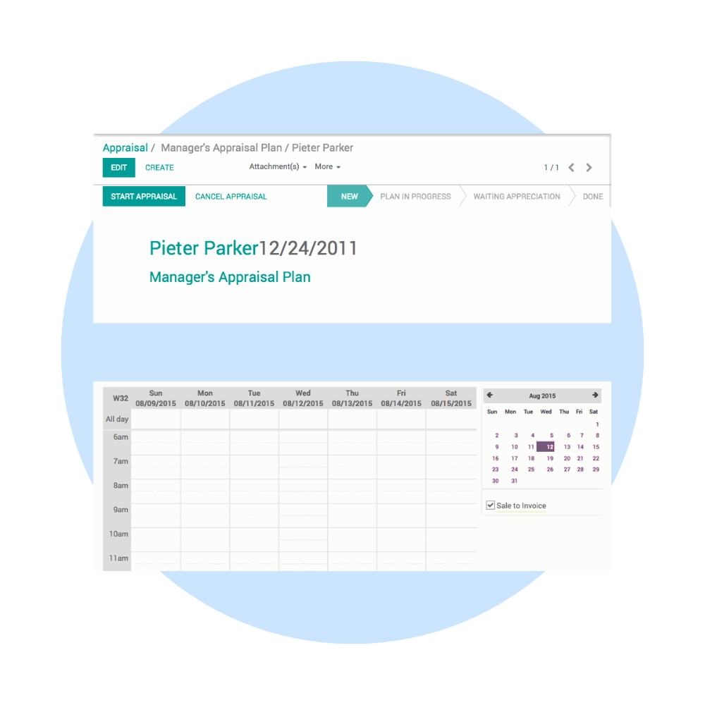
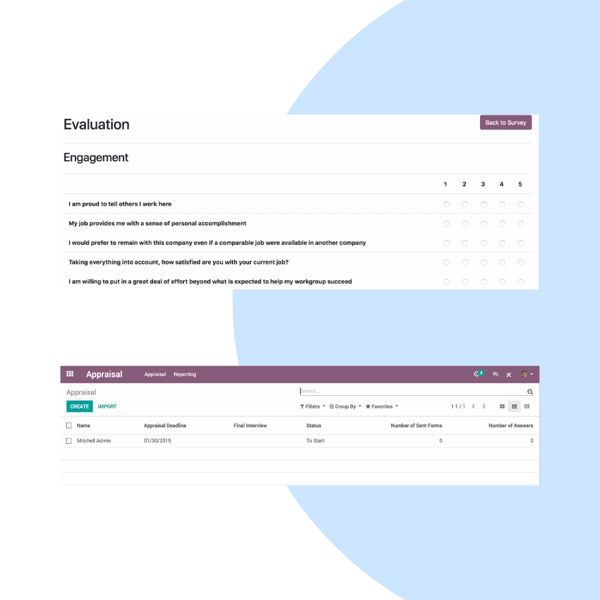
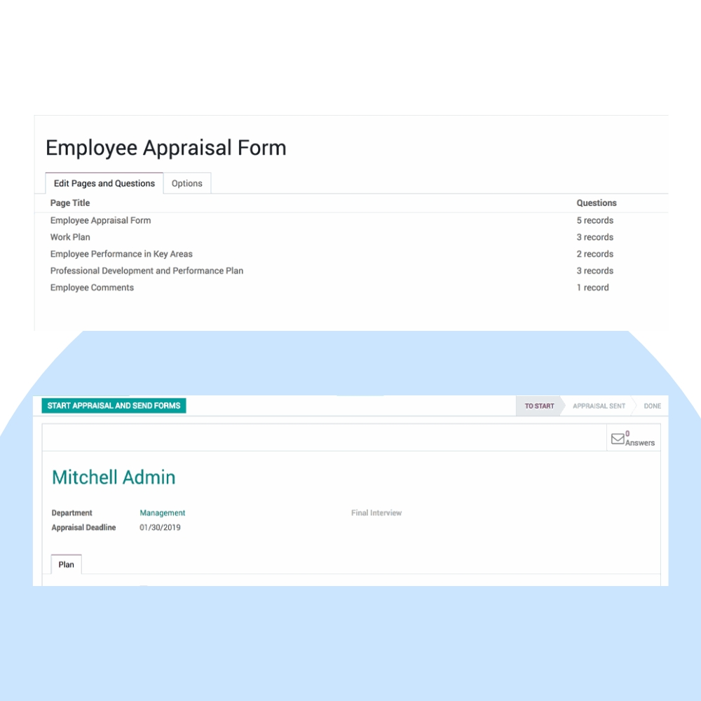

Build a culture of continuous feedback with Odoo Appraisals. We help organizations manage performance reviews, set goals, collect feedback, and align employee growth with business objectives.
We configure Odoo Appraisals to match your review cycles, KPIs, and feedback culture. Integrate appraisals seamlessly with Employees, Goals, Recruitment, and Payroll decisions.


Our implementation ensures transparent evaluations, structured feedback, and actionable insights into employee performance and development.
Run consistent appraisal cycles across teams.
Align employee goals with company objectives.
Encourage regular feedback beyond annual reviews.
Collect peer, manager, and self-feedback.
Track trends and identify growth opportunities.
Link appraisals with promotions & compensation.
We help you continuously improve appraisal processes, strengthen feedback culture, and support long-term employee development.
